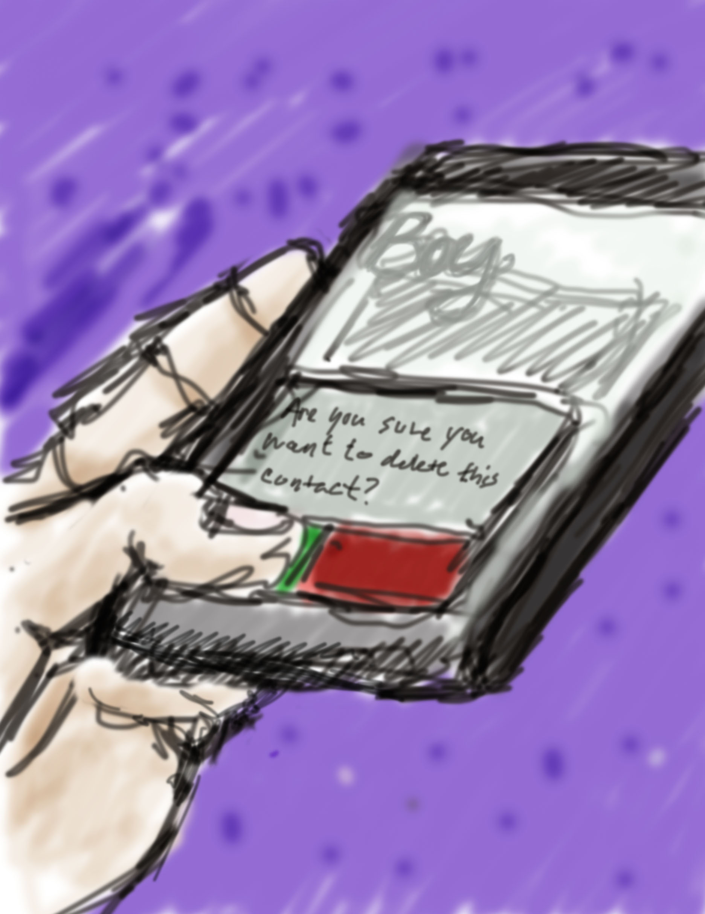
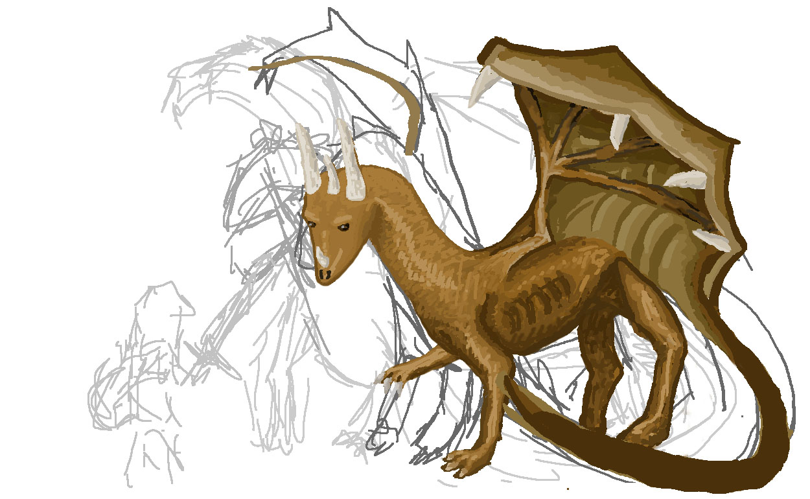
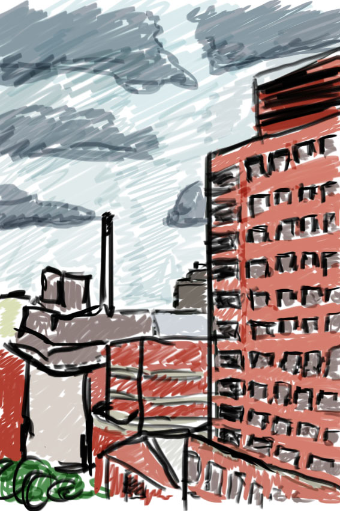
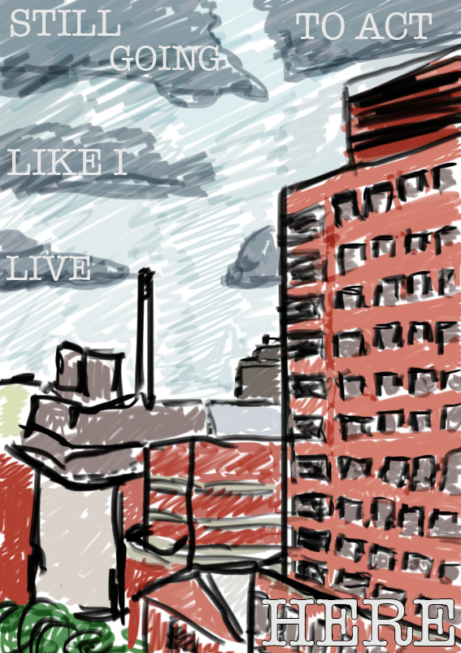
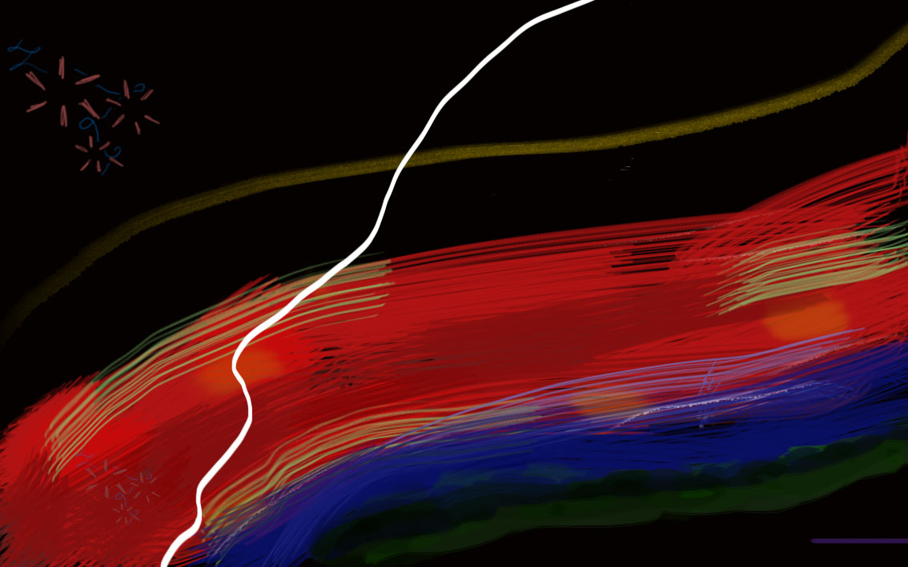
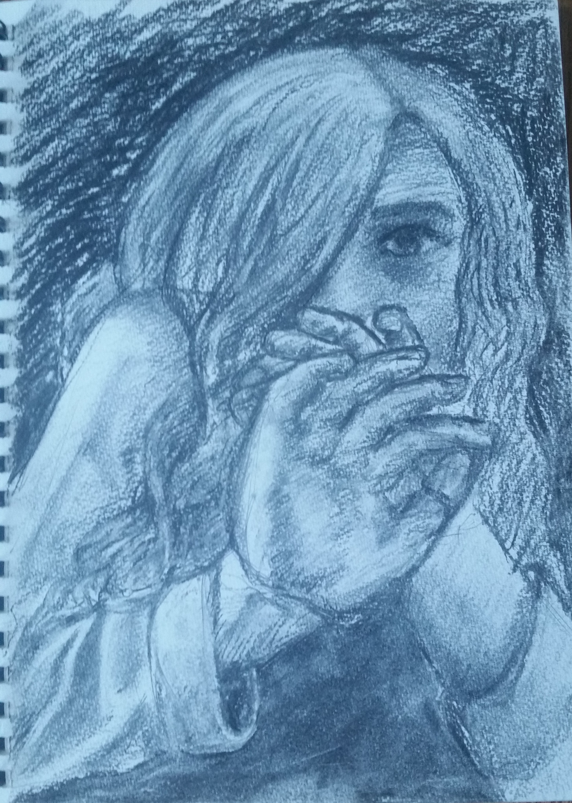
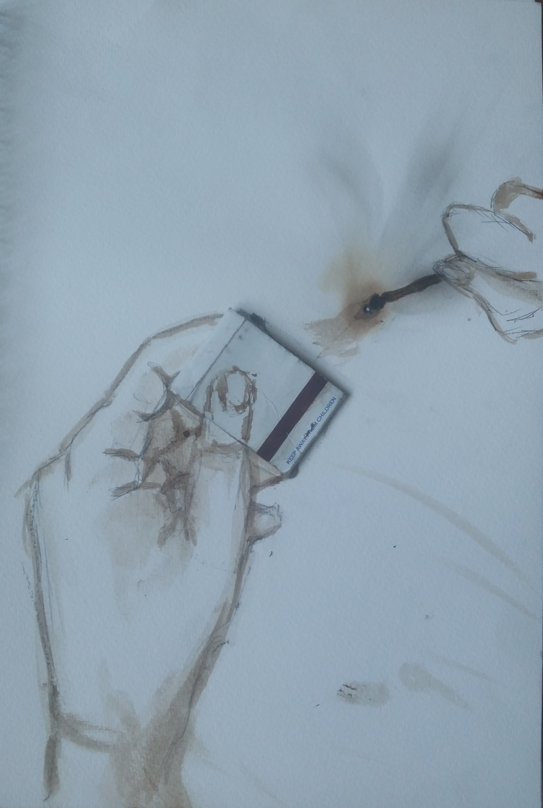

In Ideation and Prototyping, we were required to do a weekly "Creative Input" and "Creative Output" which took the forms of observing what we discovered and interacted with as well as effort towards a creative project of our chosing. In addition to this, we often had an assignment to respond to, such as a museum visit or an online article While I haven't managaed to locate all of my homework submissions, here is a collection of the initial ones.
September 13, 2017
Input: What I Discoved This Week
→ Entertainment: Destructo, Mija, and Bodak Yellow by Cardi B. Last Thursday night I went to see Destructo at Schimanski. Mija was a special guest, and together they played Bodak Yellow. The song has a really catchy beat but most of the reason I enjoyed it was the environment I was in. One of my favorite producers was playing a fun song while I was hanging out with one of my friends.
→ Media: Look What You Made Me Do (Dance Video). I enjoy watching dance videos due to the almost inhuman-ness of the moves and this one was no exception. The noticable and deliberate beat of Taylor Swift's new song makes for an enjoyable performance as the dancers sharply hit each move on each count. However, the beat changes enough that the dance fluidity varies enough to maintain interest from verse to prechorus to chorus.
→ Food: Banana Bread Cookie Dough. I had been planning to make Banana Bread but was unable to as someone had thrown out my ripe bananas. My roommate then offered me some cookie dough she had made a few days before, telling me that she had used her bananas while making cookie dough and it tasted like both Banana Bread and Cookie Dough. It had walnuts and chocolate chips in it and tasted amazing.
→ Hobbies: Drawing. Thanks to the Creative Output project, I am able to force myself to get back into drawing. I used to draw all the time in high school, but got out of the habit when I started college and my focus switched to programming. I've already begun a drawing in pencil, but I'm hoping to be able to use all the materials I have at some point, including watercolor and acrylic paints, conte, charcoal, colored pencil, metal, markers, washi tape and my camera.
→ People: This past week I met some new people in my classes! While I don't know everyone's names yet, I'm starting to recognize some people, especially those that I've talked to or that have appeared in multiple classes I'm taking this semester.
→ Lectures/Workshops/Documentaries: Breaking Vegas Documentary: The True Story of The MIT Blackjack Team. In high school, I read Bringing Down the House by Ben Mezrich, and this week I came across a documentary about the same MIT students on r/Documentaries. It's interesting watching the information as reading about it was more about the dramatized version of events that spoke of love of drama and centered around a protagonist. Instead, the documentary, while somewhat dramatized, seems to pull more directly from the stories of the players. I enjoyed revisting the story that I learned a few years ago and getting to watch the events instead of just reading about them.
One of my favorite quotes is, "Every sentence is just a remix of the dictionary," and this quote came to mind while watching this video. I agree with the video - everything is a remix, depending oh how broad your definition of remix is. Is a remix simply taking different source material and changing it? If you create something new with something old in mind, is that a remix? What is the line between remix and remake and stealing and inspiration? And do these questions even matter?
I ask because, to me, everything is a recreation of something come before it, even if they creator didn't know or was unconciously inspired by the material. It's hard to create a chord progression that hasn't already been done, and in some cases like pop songs, using a previous chord progression is actually desired as it creates a feeling of familiarity and enjoyment in the listener. The brain enjoys things that it can predict or things that feel familiar. And even though this is called out in things like The Four Chord Song and the idea of The Hero's Journey, the use of formulaic formats hasn't stopped. If anything, it's increased as more and more things are created and things that could be considered unique or one-of-a-kind become copied and recreated.
The question, to me, becomes why do people strive to do something completely unique, and why do people go out of their way to make sure what they have done cannot be freely copied. The answer is simple: people that created monitized things do not want "their money" to be taken by others. As Everything Is A Remix pointed out, Star Wars samples many things. It takes largely from The Hero's Journey, along with various other tropes. Many of its scenes are shot-for-shot visual parallels to other movies. Yet by arranging all these inspirations in a new way, Star Wars is able to copyright the characters and become another influence on future creators. It can forbid people from directly using its title, music, and likeness without permission/a license, even though the best things can come from a direct reference. Enter the parody loophole in copyright law.
My favorite uses of parody are the Star Wars Episodes of Robot Chicken. Because it's funny, it can slip through the cracks of copyright law. It's a direct parody of Star Wars, but it's also imaginitive. It's not striving to be original, and its brilliance comes from the fact that it isn't pretending to be anything new and revolutionary. Instead, it's taking people that already exist and having them manipulate characters that already exist to make fun of ideas that already exist. It's the exact definition of creativity that Everything is A Remix talks about at 16:51. It copies the characters of Star Wars, transforms their percieved character traits into a new out of character personality that is humorous, and combines these small anecdotes into one enjoyable viewing experience. Even though there is only one source material that is being copied, it draws on the components of creativity to make something new.
This is why I enjoy the public domain. I do think there should be a period of time where people can profit from the time they've invested in creating something "new". Yet, the resistance of companies like Apple and Disney of sharing their IP is sad. Especially when you've already amassed unreasonable wealth, the goal should be to share what you have in order to help those out trying to create in the future. After all, that's what patents were supposed to protect - the creators of the world. Instead, there are now patent trolls and sample trolls making money by abusing the protective wording of patents and IP even though they simply go through the same motions of suing without creating or doing anything new. They live by making money off of someone else's imagination. They are not creating or remixing, but are rather using while giving nothing in return.
Overall, I think Everything Is A Remix is very insightful and gives people in Western Civilization a chance to not only learn about the culture and society they live in but also allows people to self reflect on their ideals and motivations, as the greedy "this is mine" behavior is so normalized in today's world that it's easy to do it without second guessing ourselves.
September 27, 2017
Input: What I Discoved This Week
→ Entertainment: Meadows Festival. I was lucky enough to recieve a three day pass to the Meadows Festival from NYU, and got to see the likes of Two Door Cinema Club, Bassnectar, and Wild Belle.
→ Media: Nightbringers and Matriarch by The Black Dahlia Murder. Recently I went to the listening party for The Black Dahlia Murder's new album, Nightbringers and prior to that I listened to their two newly released singles. Personally I like Nightbringers more but I enjoy them both and am excited for the album to be officially released!
→ Food: Sizzle Pie. At the Listening Party I got my first ever taste of Sizzle Pie, a Williamsburg pizza shop. I had Margarita Pizza and I very much loved it.
→ Hobbies: Drawing. Thanks to the Creative Output project, I am able to force myself to get back into drawing. I used to draw all the time in high school, but got out of the habit when I started college and my focus switched to programming. I've already begun a drawing in pencil, but I'm hoping to be able to use all the materials I have at some point, including watercolor and acrylic paints, conte, charcoal, colored pencil, metal, markers, washi tape and my camera.
→ People: This week I reconnected with an acquaintence who I hadn't seen in a couple months. I also met a new friend (hopefully) named Juan.
→ Lectures/Workshops/Documentaries: I have not watched any new Documentaries this week.
October 4th, 2017
Input: What I Discoved This Week
→ Entertainment: Cookie Monsta, Um.., and Bandlez. On Friday, I went to Schimanski for the High Caliber pre-party, even though I wasn't going to High Caliber. The thing that made this special is that both Cookie Monsta and Um.. were performing at Lost Lands within the next two days - Cookie Monsta played Saturday and Um.. was the last slot of the festival on early early Monday morning. They were all great and I got to hang with friends and dance and walk to and from Williamsburg.
→ Media: Couch Lands! While I wasn't able to attend the dubstep heavy festival Lost Lands, Excision offered a livestream of a lot of the event on his facebook page. While I was sad that it didn't start early enough to see Yheti on Saturday, I got to hang on my couch and watch people like Kai Wachi, Funt Case, and the man himself, Excision, throw down over the course of three days. Not only that, I got to appreciate the livestream on facebook with other people who loved the music but, like me, were unable to go.
→ Food: On Wednesday, I went to my first Cheese Club meeting of the year. While I don't know the names of the cheese, they were all delicious and very much appreciated.
→ People: I hung out with a friend on Saturday and met some people in a nearby dorm room that were celebrating their friend's birthday. They were all super nice and I got to eat mini Twixes and play cards and other fun games.
→ Lectures/Workshops/Documentaries: I went to a Google event on Wednesday that was for Women in Tech and discussed things like the company culture, Imposter Syndrome, and the importance of applying to places even if you're not 100% confident in doing so. We also got treated to delicious food like lobster rolls, spring rolls, and figs with goat cheese.
October 11th, 2017
Input: What I Discoved This Week
→ Entertainment: THE BLACK DAHLIA MURDER!!! Tuesday night I went to the Highline Ballroom to see a death metal band. It was great, there was such energy in the room, and Trevor pointed at me at one point as I was screaming the lyrics to Matriarch. I also went to see NYU's New Music Concert last Friday which was wonderful.
→ Media: I'm really enjoying the song Cassanova by Allie X at the moment.
→ Food: On Wednesday, I went to my first Cheese Club meeting of the year. While I don't know the names of the cheese, they were all delicious and very much appreciated.
→ Hobbies: I went home for the weekend and thus got to play card games with my family. It was very fun.
→ People: I hung out with someone who I had met once before and he was absolutely horrible to hang out w. 1/10, would not hang w again.
→ Lectures/Workshops/Documentaries: I watched a video on the animation process for Snow White, and how there were over 200,000 drawings to animate that movie.
Response to the Toaster Article:
I think it's an interesting point that people only tend to humanize objects that can mimic human functions. A human sees capability in Alexa or a Robot that can move its head to follow your finger than in your everyday toaster, even though they are both machines at the end of the day. Yet even though humans program machines to do the extraordinary, we tend to limit ourselves to that particular use. The toaster toasts bread. The phone makes a phone call. It's quite simplistic.
Yet the introduction of the project where people could call a number to hear a story about that place in 1993 is amazing, because it demonstrates a whole new application. Instead of using the phone as a middle man to connect you to a person, the phone is the destination. You have a connection to the object itself, telling stories. The capability in the object relies not on the object itself, but the way we are willing to use them.
Objects hold stories. If a previous owner is known, you can know the background. Yet some things can never translate. You can mimic sight with a camera. You can mimic hearing with a voice recording. Yet one cannot truly transfer touch or taste without going back to the source. I've set a toaster on fire before and had to toss it into the snow. I've accidentally yanked its cord when it got caught on something. It's in the line of sight of the cat's litter box. It hears everything that goes on by the front door - all the "Welcome home!"s, all the screaming and frustration from being late for something, all the nights where we bake brownies and make hot cocoa in the wintertime.
The toaster tray is a little rattle-y, and it takes a while to heat up. But that just shows how long we've had it, how much we use it. From my understanding, my toaster's only interaction with the world around it is to heat up and potentially burn whatever is inside it. Yet if my toaster holds stories, they would be memories long forgotten, tales I would love to hear.
October 18th, 2017
Input: What I Discoved This Week
→ Entertainment: I had been planning to go out to a show on Friday night but I missed the midnight cutoff point by 5 minutes so I wasn't able to attend.
→ Media: I've started watching pokemon card unboxings from MaxMoeFoe on Youtube. For some reason I find them really entertaining.
→ Food: One day this week my entire day's meals consisted of pizza with jelly beans as a snack.
→ Hobbies: As my depression keeps kicking back in more and more, I'm enjoying sleeping a lot.
→ People: My friend from Maine came up to visit this past weekend! It was a lot of fun being with her.
→ Lectures/Workshops/Documentaries: I watched a short YouTube video on Filthy Frank's video editing style and how his purposeful "low budget" style brings the audience in closer to the story he tells.
Creative Output Project: A Quote A Day
I have a document with assorted quotes that I've been collecting for almost two years now. They are often taken from random places and written down when I hear and like them. They can be wise ("The axe forgets, the tree remembers."), direct ("do no harm, take no shit."), or even silly ("Oatmeal doesn’t live by your time constraints. Oatmeal is free and flowy."), but all important to me. My plan is to choose a quote each day and illustrate it in some manner. I may draw its literal meaning, an object/the words in the quote, or what it means to me, but at the end of the semester there will be a collection of drawings that create a visual representaiton of quotes that I hold dear.
End of Class Note: I have decided to edit so that only my favorite images are here rather than all the work.

“Sometimes you want someone and you want to kiss them and be with them, but you can’t because responsibility demands sacrifice.” - Princess Bubblegum, Adventure Time

“Fairy tales do not tell children the dragons exist. Children already know that dragons exist. Fairy tales tell children the dragons can be killed.” ― G.K. Chesterton


“Still gonna act like i live here” - ?

“3: Don't be his friend, you know you're gonna wake up in his bed in the morning.” - Dua Lipa, "New Rules"

“The axe forgets, the tree remembers.” - ?

“It's okay to be a glowstick. sometimes you have to break before you shine.” - ?